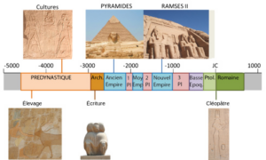
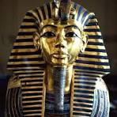
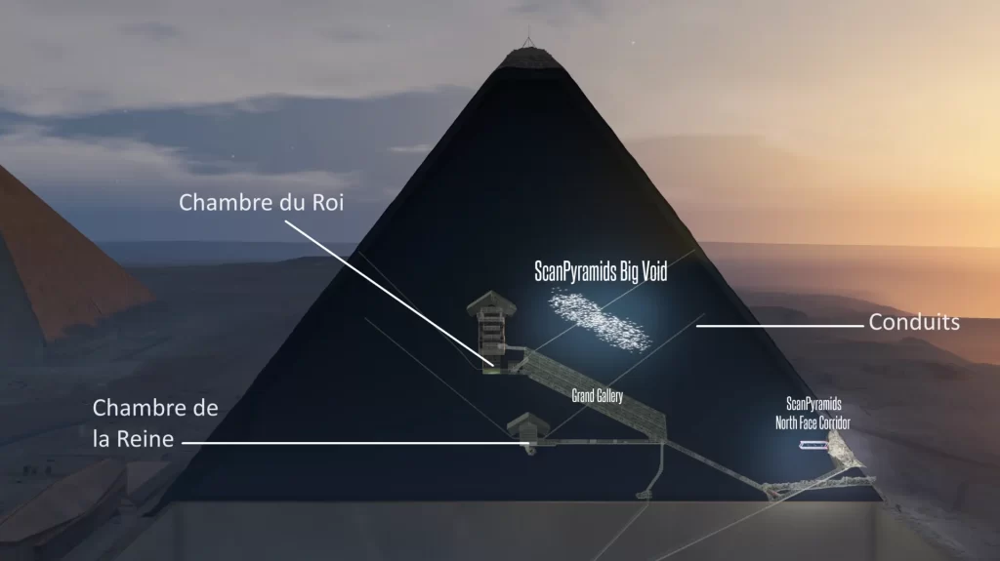
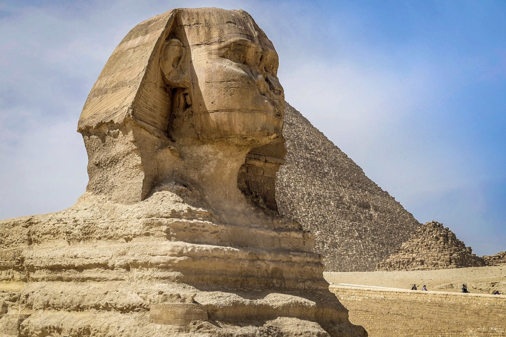
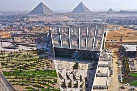

Les pyramides d’Égypte comptent parmi les monuments les plus célèbres et les plus mystérieux de l’histoire humaine.
Construites il y a plus de 4 500 ans, elles témoignent du génie architectural, religieux et symbolique
de la civilisation égyptienne antique.
Date de création

Frise chronologique
Les pyramides de Gizeh ont été construites entre environ 2600 et 2500 avant J-C, durant la IVᵉ dynastie
de l’Ancien Empire. Elles furent construites sous le règne des pharaons Khéops, Khéphren et Mykérinos.
Ces monuments sont donc parmi les plus anciennes grandes constructions en pierre du monde.
Les différentes Pyramides
Khéops
La pyramide de Khéops, aussi appelée Grande Pyramide, est la plus imposante. Elle mesurait à l’origine
146,6 mètres de hauteur et repose sur une base carrée de 230 mètres de côté.
Elle est composée d’environ 2,3 millions de blocs de pierre, dont le poids moyen dépasse deux tonnes.
Pendant près de 3 800 ans, elle fut la plus haute construction jamais réalisée par l’homme.
Khéphren
La pyramide de Khéphren est la deuxième plus grande du plateau de Gizeh.
Elle mesurait à l’origine environ 143,5 mètres de hauteur et repose sur une base carrée d’environ 215 mètres de côté.
Elle est constituée de près de 2 millions de blocs de pierre, dont certains pèsent plusieurs tonnes.
Bien que légèrement plus petite que celle de Khéops, elle paraît parfois plus haute car elle est construite sur un socle rocheux plus élevé et conserve encore une partie de son revêtement en calcaire au sommet.
Mykérinos
La pyramide de Mykérinos est la plus petite des trois grandes pyramides de Gizeh.
Elle mesurait à l’origine environ 65,5 mètres de hauteur et repose sur une base carrée d’environ 102 mètres de côté.
Elle est composée de plusieurs centaines de milliers de blocs de pierre, nettement moins nombreux que ceux des pyramides de Khéops et de Khéphren.
Malgré ses dimensions plus modestes, elle se distingue par la qualité de sa construction et par l’utilisation de blocs de granit pour sa partie inférieure.
Histoire et pharaons

Représentation des Pharaons
Chaque pyramide est associée à un pharaon précis. Khéops fit bâtir la Grande Pyramide,
Khéphren fit construire la sienne ainsi que le célèbre Sphinx, et Mykérinos érigea une pyramide plus petite.
Ces monuments faisaient partie de vastes complexes funéraires comprenant des temples,
des lieux de culte.
Fonction des pyramides

L'intèrieur des Pyramides
Les pyramides avaient avant tout une fonction funéraire. Elles servaient de tombeaux aux pharaons,
considérés comme des dieux vivants. Leur forme symbolisait le rayon de soleil reliant la Terre au ciel,
permettant au pharaon de rejoindre le dieu Rê dans l’au-delà.
Elles représentaient également la puissance et l’autorité absolue du souverain.
Techniques de construction et outils
Outils utilisés lors de la construction
Les Égyptiens utilisaient des outils simples mais efficaces, principalement en cuivre et en pierre.
Les blocs de calcaire étaient extraits de carrières proches, tandis que le granit provenait d’Assouan,
à plusieurs centaines de kilomètres.
Les pierres étaient transportées par bateau sur le Nil, puis déplacées à l’aide de traîneaux en bois.
Des systèmes de rampes auraient permis d’élever progressivement les blocs.
Contrairement aux idées reçues, les pyramides furent construites par des ouvriers qualifiés et non par des esclaves.
Le Sphinx de Gizeh

photo du Sphinx de Gizeh
Le Grand Sphinx de Gizeh est une statue monumentale représentant un lion à tête humaine,
probablement à l’effigie du pharaon Khéphren.
Il mesure 73 mètres de long et 20 mètres de haut.
Sculpté directement dans la roche, il avait pour rôle de protéger symboliquement le site funéraire.
Son nez était déjà endommagé bien avant l’époque moderne.
Classement UNESCO
Prix UNESCO
Les pyramides de Gizeh sont inscrites au patrimoine mondial de l’UNESCO depuis 1979,
sous l’appellation « Memphis et sa nécropole ».
Elles constituent la seule des sept merveilles du monde antique encore visible aujourd’hui,
ce qui renforce leur importance historique et culturelle.
Le Grand Musée Égyptien

Photo du Grand musée Egyptien
Situé à proximité immédiate des pyramides, le Grand Musée Égyptien est l’un des plus grands musées
archéologiques du monde consacrés à une seule civilisation.
Il abrite plus de 100 000 objets, dont la collection complète du trésor de Toutânkhamon.
Le musée utilise des technologies modernes pour offrir une expérience immersive
et représente un lien entre l’Égypte antique et le monde contemporain.